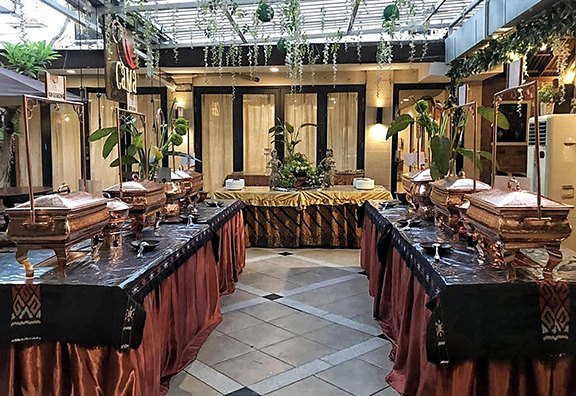

Gama Ikan Bakar & Seafood TMII
sumber: gamaseafood.com
Gama Ikan Bakar & Seafood TMII menjadi salah satu tujuan wisatawan yang mencari hidangan laut halal dengan suasana yang nyaman setelah berlibur ke TMII. Menu andalannya adalah aneka ikan bakar dan seafood segar.
📍 Green Terrace Taman Mini Blok A Nomor 1, Jalan Taman Mini Indonesia Indah, Ceger, Cipayung, Kota Jakarta Timur
🕒 10.00 - 22.00 WIBSate Khas Senayan

sumber: satekhas.sarirasa.co.id
Restoran keluarga ini menyajikan berbagai kuliner nusantara yang populer, terutama berbagai jenis sate. Selain sate, Anda juga bisa menikmati Nasi Goreng, Lontong Cap Gomeh, dan hidangan Indonesia lainnya.
📍 Jl. Raya Pasar Minggu No.44, Jakarta (Cek kembali lokasi terdekat karena Sate Khas Senayan memiliki banyak cabang)
🕒 09.00 - 22.00 WIBNasi Goreng Kambing Kebon Sirih

sumber: id.wikipedia.org
Kuliner legendaris Jakarta yang sudah berdiri sejak 1958 ini wajib Anda coba. Nasi goreng kambingnya terkenal dengan aroma rempah yang kuat dan daging kambing yang empuk.
📍 Jalan Kebon Sirih Nomor 3, Kecamatan Menteng, Jakarta Pusat
🕒 10.00 - 00.00 WIB
Info Terbaru Jakarta:
Wisata dan Kuliner
Contact Us!
+62-123-4567-890 email@adress.com
Wisata dan Kuliner
Contact Us!
+62-123-4567-890 email@adress.com